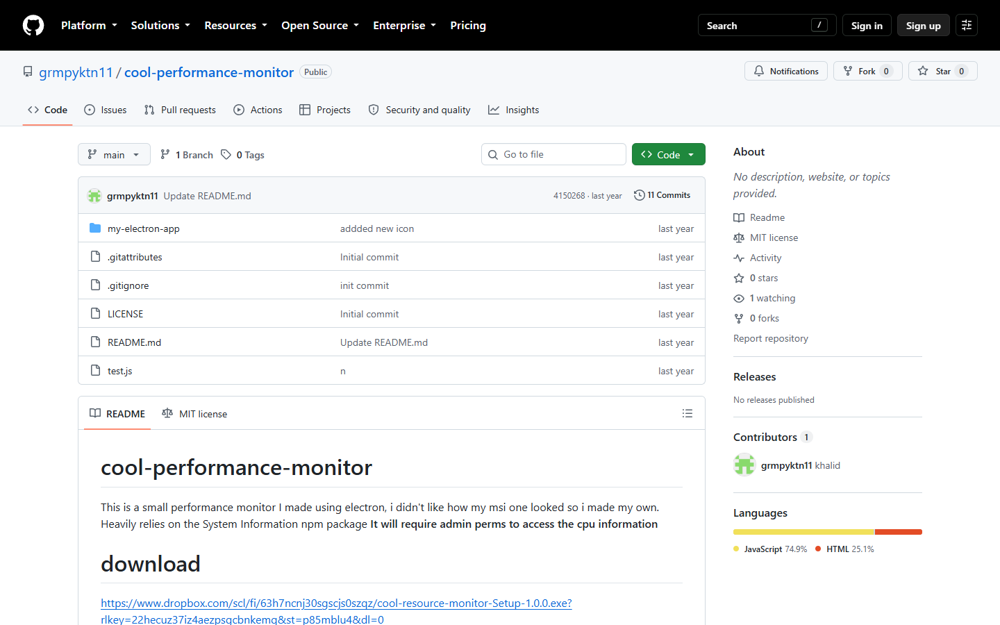

Resource Monitor
ELECTRON · NODE

NOTES
A little Electron widget that sits on your desktop and tells you your CPU and RAM usage. That is the whole thing.
I wanted something I could glance at without opening Task Manager, and I wanted it to be cute rather than a wall of graphs.